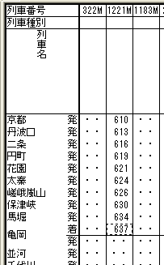
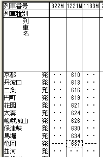

例えば、駅時刻形式が [発着] の駅を終着駅とする列車がある場合(この例では亀岡)、

[駅のプロパティ]ダイアログで、その駅の駅時刻形式を [発時刻] に変更すると、そのままでは時刻表ビューの終着駅には時刻が表示されません。
これを避けるため、OuDia はこのケースでは、 [着時刻] を [発時刻] に変更します。

「[駅時刻形式]変更時の、列車の駅時刻変更」機能は、以下の規則に従って、全列車の駅時刻を変更します。
駅時刻形式を [発時刻] に変更した場合、変更した駅を始発駅・終着駅とする列車の駅時刻が
であれば、その駅の駅時刻を
に変更します。
駅時刻形式を[発着]に変更した場合、変更した駅を終着駅とする列車の駅時刻が
であれば、その駅の駅時刻を
に変更します。
また、変更した駅を始発駅とする列車の駅時刻が
であれば、その駅の駅時刻を
に変更します。
駅時刻形式を [下り着時刻]に変更した時の下り列車・[上り着時刻]に変更した時の上り列車では、変更した駅を始発駅・終着駅とする列車の駅時刻が
であれば、その駅の駅時刻を
に変更します。